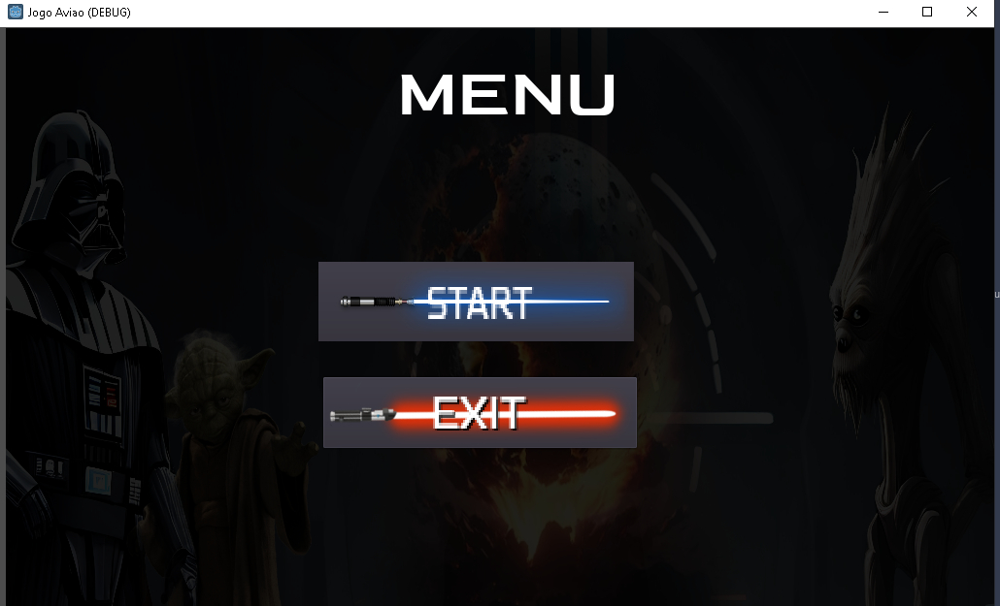
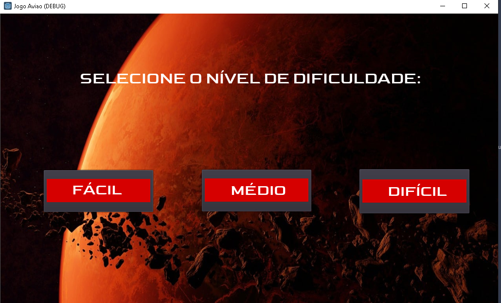
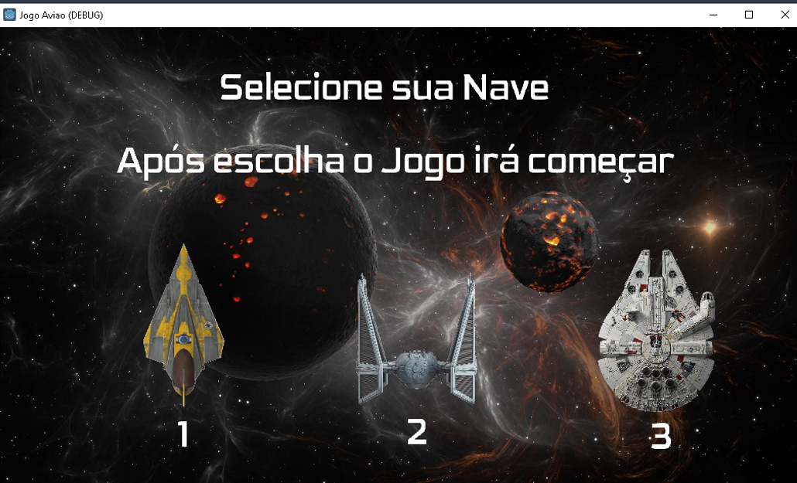
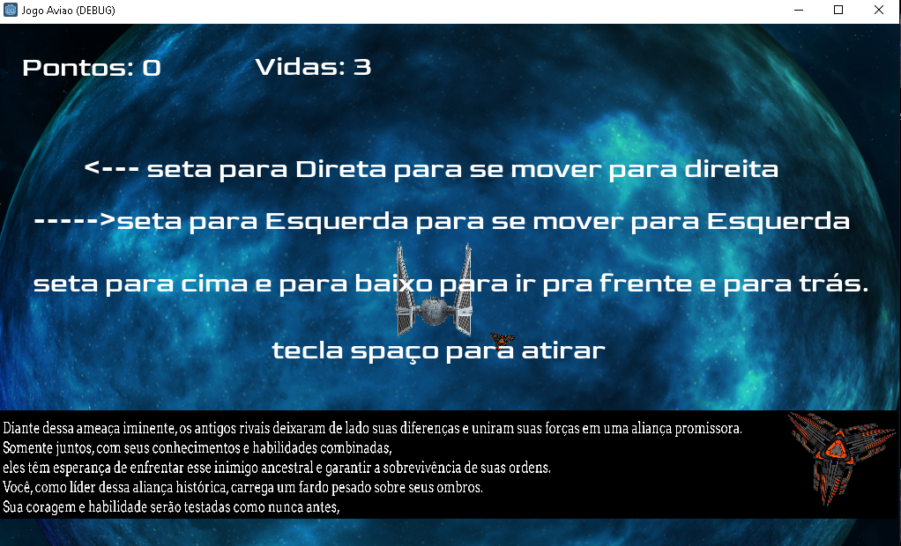
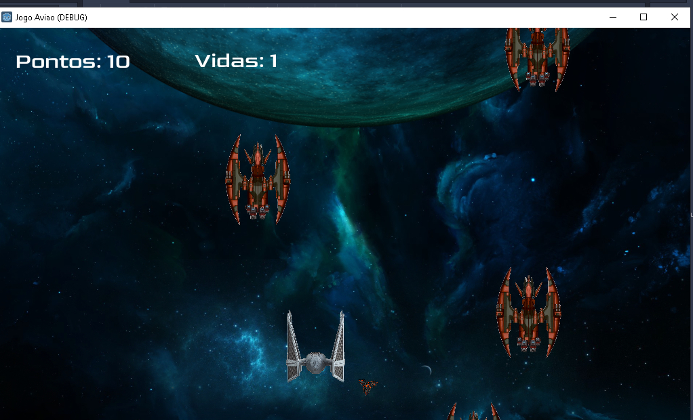
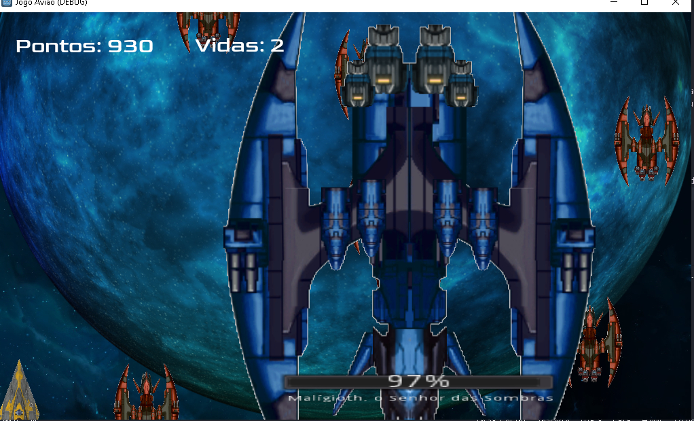

Ao iniciar o jogo, iremos obter a tela de início, a tela consiste em algumas opções para os usuários tais como iniciar o jogo ou caso deseje, exit para sair do jogo
A partir do momento que meu usuário deseja prosseguir para jogar, ele obtém 3 opções no jogo, 3 modos sendo fácil, médio e difícil, cada modo contém suas dificuldades, ou seja, no modo fácil você precisa atingir um limite menor nos pontos quando destrói uma nave inimiga para prosseguir a fase e matar o boss do que a fase difícil, quanto maior a fase maiores os desafios
O usuário pode selecionar alguma destas três opções de naves para jogar , cada nave obtém seu estilo segue abaixo as opções:
Breve apresentação sobre a história do jogo, a equipe realizou o desenvolvimento de uma intro, após selecionar a nave a intro é mostrada ao usuário, caso o usuário deseje ele pode selecionar o botão para pular a intro e seguir o jogo
O usuário vai prosseguir com o jogo, sendo informado de como jogar e sobre a história do jogo , as demais informações são realizadas por "Outside", uma nave amiga que ira repassar algumas informações importantes ao decorrer do jogo
O usuário vai se deparar com os desafios propostos no jogo, ele deve combater as naves para prosseguir o desafio
Ao atingir determinados pontos, O usuário deve derrotar o boss para conseguir concluir o objetivo do game
